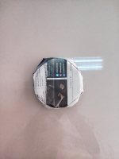

| Nomor |
Foto |
Deskripsi Foto |
| 1 |
|
Data Pembungkusan Untuk Sterilisasi Alat Kaca Alas Datar dengan Oven |
| 2 |
 |
Data Pembungkusan Untuk Sterilisasi Alat Pipet Serologi dengan Oven |
| 3 |
 |
Data Pembungkusan Untuk Sterilisasi Alat Tabung Reaksi dengan Oven |
| 4 |
 |
Data Pembungkusan Untuk Sterilisasi Alat Cawan Petri dengan Oven |
| 5 |
 |
Data Hasil Pengamatan Inokulasi |
| 6 |
 |
Data Hasil Pengamatan Bakteri Salmonella Pada Media LIA |
| 7 |
|
Data Pengamatan Pengujian Total Coliform cara APM |
| 8 |
 |
Data Hasil Pengamatan Media LB di dalam tabung ulir berdurham |
| 9 |
|
Data Pengamatan Hasil Penetapan Kadar Fe dengan Autotitrator |
| 10 |
|
Data Hasil Pengamatan Bakteri E.coli Pada Media MCA |
11 |
|
Data Hasil Pengamatan Bakteri Salmonella Pada Media BGA |